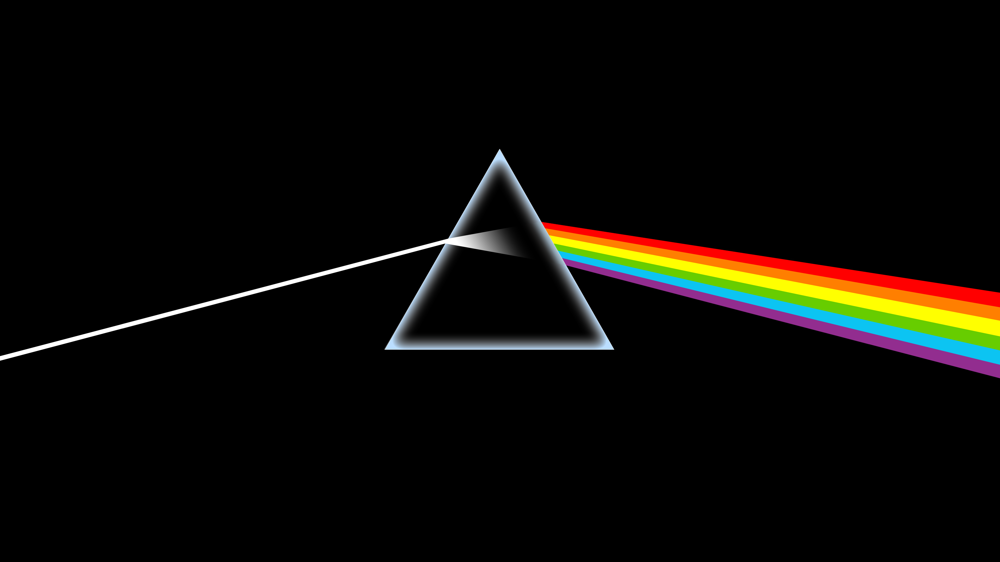

Buitenschoolse Activiteiten
Ik speel keyboard, maar kan ook gitaar en basgitaar. Ik maak ook muziek en ben geïnteresseerd in prog rock, psychidelische rock en jazz rock, maar elke stijl en genre van muziek is interessant voor mij. Ik jam ook wel eens met andere mensen. Ik game ook zelf en ben geïnteresseerd in voornamelijk indie games. Ik ben ook geïnteresseerd in filosofie.
